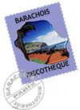

La Réunion danse en métropole
Toujours une questions cruciale en janvier, comment vais-je commencer l'année. L'année dernière la découverte d'un plagiat de mon site sur le site de l'ONF m'a permis de parler de sites administratifs. Cette année, la découverte d'un plagiat (aujourd'hui disparu) de ma page sur les noms de l'île ne mérite même pas d'être notée...
 L'année commence souvent par une fête de nouvel an et c'est aussi la fête qui rassemble de temps à autre les réunionnais de métropole. Partout en France, ils se réunissent autour d'un repas créole et dansent sur du maloya, du sega mais aussi du Rn'B du rap et du zouk. Ces soirées regroupent plusieurs générations et c'est l'occasion pour beaucoup de se retrouver et reparler du péï... Il y a aussi les soirées «Océan Indien» au Globo ainsi que les discotèques du Barachois à Paris ou le Refuge à Bordeaux. Il y a surtout beaucoup de soirées organisées ça et là des des cadres originaux ou le maloya n'est pas une musique inconnue. Pour promouvoir ces soirées et leurs organisateurs, le site allonsbouger fait chaque semaine la promotion des sorties possible avec mise en ligne des flyers de futurs soirées et évidement, des photos de soirées passées. Si vous êtes zoreil et que vous voulez découvrir l'ambiance de la Réunion, ce site est un bon point de départ vers une sortie à thème.
Ces soirées sont un succès parce que les réunionnais sont nombreux en métropole. Dans une étude de 2002, l'INSEE en dénombrait 96.000 et notait au passage une évolution sociale de cette communauté. Cette communauté a des lieu de rendez-vous sur Internet, le Conseil Général de la Réunion recense (recensait) des associations d'accueil des nouveaux arrivants et a même ouvert en 2003, un chat (ou t'chat) pour mettre en contact les étudiants réunionnais en métropole et ceux restés au pays. Ce chat avait été ouvert avec l'aide de Chat-Réunion qui propose aussi un rendez-vous pour février 2005 et un forum où annoncer des soirées réunionnaises en métropole.
Pour être complet, il me faut aussi signaler la petite gazette qui propose un forum pour la communauté réunionnaise de métropole avec une liste de témoignages-interview.
L'étude de l'INSEE de 2002 citée plus haut n'est plus disponible mais parce que dépassée. L'INSEE mets régulièrement à jour cette étude dont la lecture reste très intéressante.